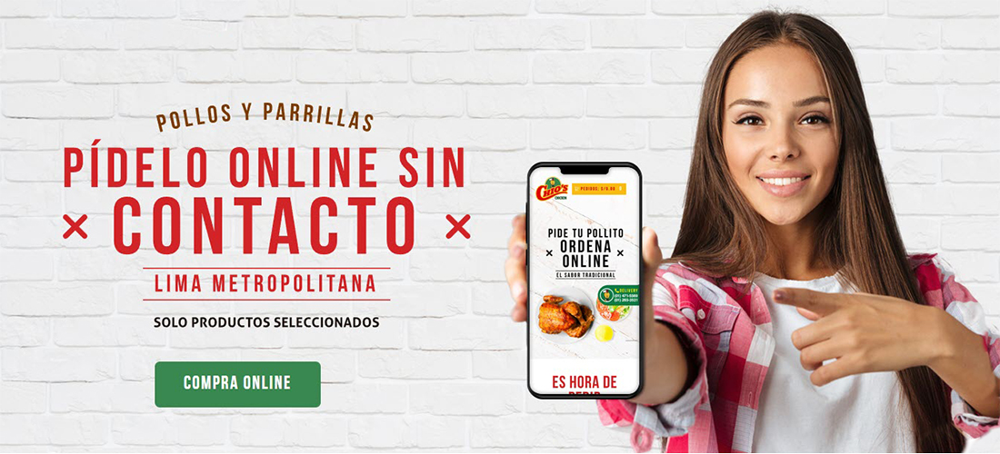
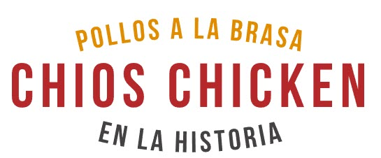

-

-

- 



Desde 1993, en la familia Chios hemos apostado por llevar el exquisito sabor del pollo a la brasa, acompañado de un trato familiar, servicio de excelencia y sabor con tradición a los vecinos de Lince. Además del plato bandera del Perú, ofrecemos parrillas, platos criollos, caldos y bebidas; lo mejor de la comida peruana.
Somos Chios Chicken, el sabor que perdura en el tiempo y en las generaciones que día a día nos visitan, desde hace más de 25 años.